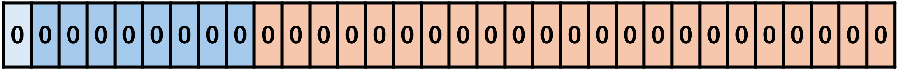
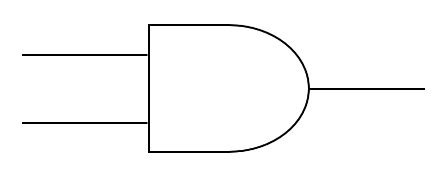
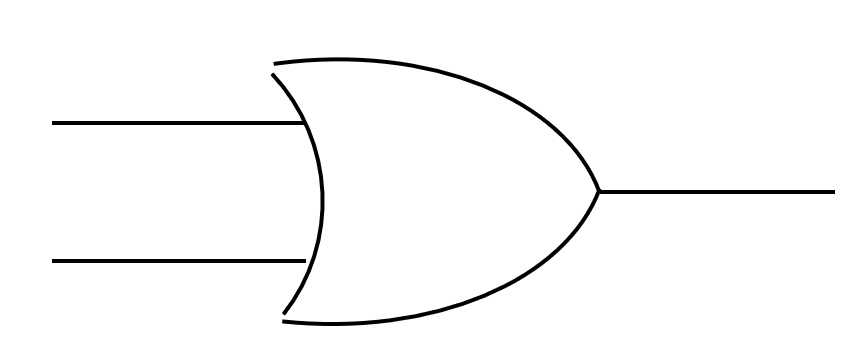
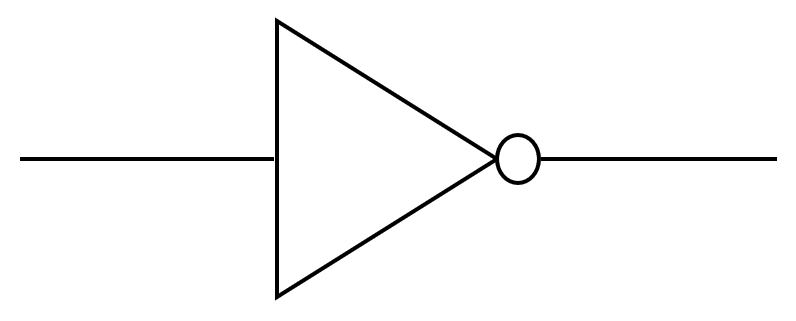
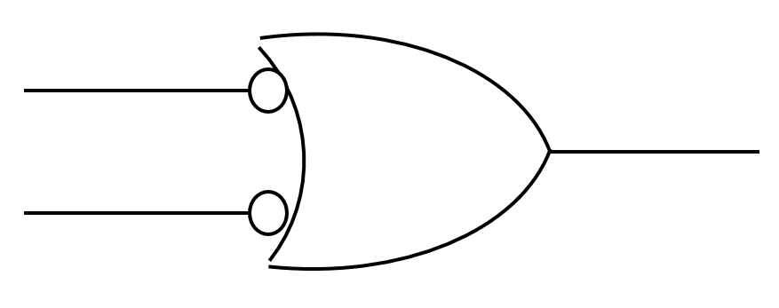
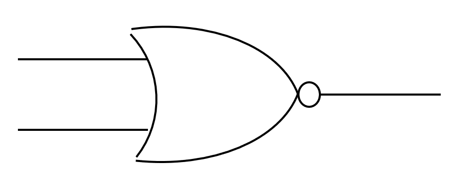
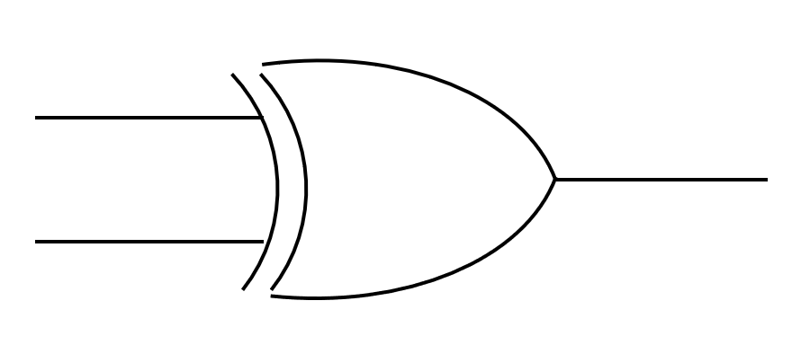

| 10進数 | 2進数 | 16進数 |
|---|---|---|
| 0 | 0000 | 0 |
| 1 | 0001 | 1 |
| 2 | 0010 | 2 |
| 3 | 0011 | 3 |
| 4 | 0100 | 4 |
| 5 | 0101 | 5 |
| 6 | 0110 | 6 |
| 7 | 0111 | 7 |
| 8 | 1000 | 8 |
| 9 | 1001 | 9 |
| 10 | 1010 | A |
| 11 | 1011 | B |
| 12 | 1100 | C |
| 13 | 1101 | D |
| 14 | 1110 | E |
| 15 | 1111 | F |
0と1を反転させる3₁₀の2進数3ビット
3₁₀ = 011₂011の0と1を入れ替えて100にする100 + 1 = 1010で正、1で負を表す-2ⁿ⁻¹ ~ 2ⁿ⁻¹ - 1である0.625₁₀)
0.625 × 2 = 1.25 → 整数部分 10.25 × 2 = 0.5 → 整数部分 00.5 × 2 = 1. → 整数部分 10になったので終了0.101₂
| A | B | A AND B |
|---|---|---|
| 0 | 0 | 0 |
| 0 | 1 | 0 |
| 1 | 0 | 0 |
| 1 | 1 | 1 |

| A | B | A OR B |
|---|---|---|
| 0 | 0 | 0 |
| 0 | 1 | 1 |
| 1 | 0 | 1 |
| 1 | 1 | 1 |

| A | NOT A |
|---|---|
| 0 | 1 |
| 1 | 0 |

| A | B | A NAND B |
|---|---|---|
| 0 | 0 | 1 |
| 0 | 1 | 1 |
| 1 | 0 | 1 |
| 1 | 1 | 0 |

| A | B | A NOR B |
|---|---|---|
| 0 | 0 | 1 |
| 0 | 1 | 0 |
| 1 | 0 | 0 |
| 1 | 1 | 0 |

| A | B | A XOR B |
|---|---|---|
| 0 | 0 | 0 |
| 0 | 1 | 1 |
| 1 | 0 | 1 |
| 1 | 1 | 0 |

| 入力 | 出力 | ||
|---|---|---|---|
| A | B | C | S |
| 0 | 0 | 0 | 0 |
| 0 | 1 | 0 | 1 |
| 1 | 0 | 0 | 1 |
| 1 | 1 | 1 | 0 |
| 入力 | 出力 | |||
|---|---|---|---|---|
| A | B | X | C | S |
| 0 | 0 | 0 | 0 | 0 |
| 0 | 1 | 0 | 0 | 1 |
| 1 | 0 | 0 | 0 | 1 |
| 1 | 1 | 0 | 1 | 0 |
| 0 | 0 | 1 | 0 | 1 |
| 0 | 1 | 1 | 1 | 0 |
| 1 | 0 | 1 | 1 | 0 |
| 1 | 1 | 1 | 1 | 1 |
アナログ
デジタル
2進法・2進数
情報量とその単位
=を使って計算を始める=セル番地1+セル番地2-セル番地3...で四則演算
+が足し算、-が引き算、*が掛け算、/が割り算=関数名(セル番地1:セル番地2)でセル番地1~2の間の全てのセルの数値を対象として各関数の計算が行われる
SUM
AVERAGE
MAX/MIN